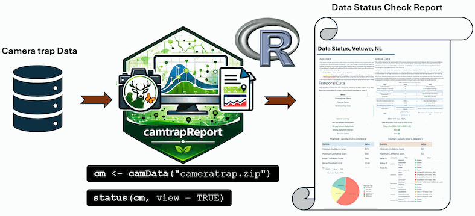

Data Status Report
Elham Ebrahimi
Source:vignettes/articles/data-status-report.Rmd
data-status-report.RmdPurpose of the Data Status Report
The Data Status Report provides an overview of the quality, completeness, and readiness of a camera-trap dataset before generating the final Ecological Report. It helps users check whether the main input files, metadata fields, deployment information, observation records, taxonomy, timestamps, annotation information, and spatial data are complete and internally consistent.
This report is especially useful as a first quality-control step. It allows users to identify missing values, duplicated records, invalid timestamps, incomplete metadata, spatial issues, and inconsistencies between deployments and observations. Based on these checks, users can decide whether the dataset is ready for reporting or whether further correction is needed before ecological analyses are performed.
Figure 1 summarises how camtrapReport checks the
readiness of a camera-trap dataset before ecological reporting. After
the data are loaded with camData(), the
status() function runs automated checks on the main input
files, metadata, deployments, observations, timestamps, taxonomy,
spatial information, and annotation records. The output helps users
identify potential issues and decide whether the dataset is ready for
generating the final Ecological Report.

Figure 1. Workflow for generating a Data Status Report from camera-trap data using camtrapReport.
library(camtrapReport)
# Copy the bundled example dataset to a writable temporary directory
example_root <- tempfile("camtrapReport-example-")
dir.create(example_root, recursive = TRUE)
example_source <- system.file(
"external",
"dataset",
package = "camtrapReport",
mustWork = TRUE
)
copied <- file.copy(
from = example_source,
to = example_root,
recursive = TRUE,
copy.mode = FALSE
)
stopifnot(
isTRUE(copied),
dir.exists(file.path(example_root, "dataset"))
)
# Load the example camera-trap data
cm <- camData(
file.path(example_root, "dataset"),
update = TRUE
)
# Generate and view the Data Status Report
status(cm, view = TRUE)When view = TRUE, the generated report is opened in the
browser. This provides a quick, human-readable overview of dataset
quality, completeness, and consistency.
The function also invisibly returns the path to the HTML report. By
default, data_status.html and its intermediate
data_status.Rmd file are written to the R session’s
temporary directory. Use filename to give another file stem
or a path inside an existing output directory:
dir.create(
"reports",
recursive = TRUE,
showWarnings = FALSE
)
status_file <- status(
cm,
filename = file.path("reports", "data_status_2026"),
view = FALSE
)An existing file with the same name may be replaced. Use a deliberate, versioned filename when reports from multiple processing runs must be retained.
Example Data Status Reports
Below are previews of Data Status Reports generated with
camtrapReport for different camera-trap monitoring
projects. These examples illustrate the presentation of dataset
completeness and potential issues. Click a preview to open the
corresponding complete report. Reports can also be generated locally
from a Camtrap DP dataset using the workflow described above.
Exploring data-status results in R
The results of the data-status checks are also stored inside the
camReport object. Users can explore these results directly
in R through cm$data_status. This is useful when users want
to inspect the underlying tables, extract summaries, or use the
quality-control outputs in another workflow.
# Explore all data-status outputs stored in the camReport object
cm$data_status
# Show the available data-status components
names(cm$data_status)
cm$data_status$Spatial
cm$data_status$Temporal
cm$data_status$Essentials
cm$data_status$Annotation
cm$data_status$Validation
cm$data_status$Species
cm$data_status$VisualsFor example, the species table can be inspected to check which species were detected and how many captures were recorded for each species.
# View species summary table
cm$data_status$Species$TableTogether, status(cm, view = TRUE) and
cm$data_status provide both a human-readable HTML report
and direct access to the underlying data-quality summaries in R. This
makes the Data Status Report useful for documenting data readiness,
identifying issues, and improving the dataset before generating the
final Ecological Report.